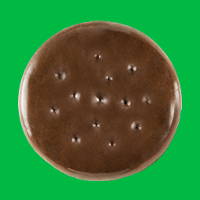
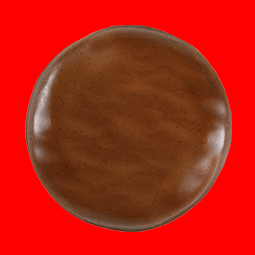
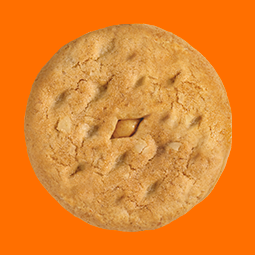
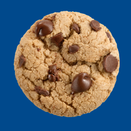

Our Cookies
Checkout our latest and delicious cookies.
Mint Chocolate
Tasty mint chocolate cookies

Peanut Butter
Yummy peanut buttery goodness

Oatmeal
Your fitness instructors favorite

Chocolate Chip
Gooey chocolate you'll love

About us

Cookie Store was founded in 2020 during the height of the Covid-19 pandemic by SS and AA. Working behind the scenes to open the first Cookie Store location, SS baked her signature cookie recipes using real eggs, real butter, and real cane sugar in her home, preparing hundreds of boxes weekly by hand for driveway pick-up. Quickly becoming known as “The Cookie Lady,” and amassing an organic social media following, SS realized that her passion project was blooming into a full-blown business. The original Cookie Store opened just around the corner, allowing the company to serve more loyal Cookie Store fans.